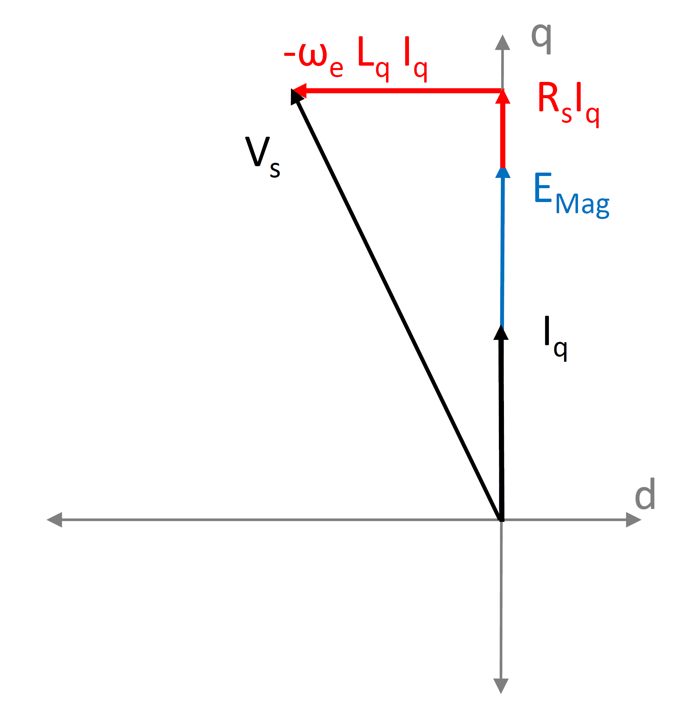
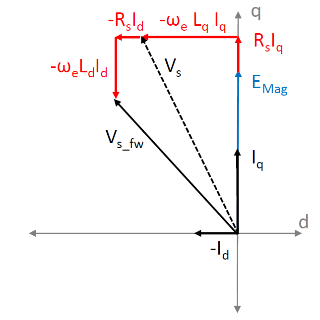
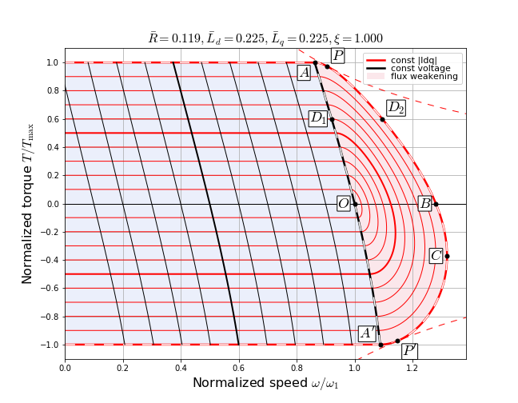

5.5.1. 弱磁控制¶
5.5.1.1. 动机¶
许多应用需要电机以高于其额定速度的速度运行。在 PMSM中，反电动势与转子速度成正比增加。典型的稳态定子电压方程如 PMSM 所示。这里， 5.41 给出。其中 \(R_{s}\) 为每相定子电阻， \(L_{d}\) 和 \(L_{q}\) 分别为 d 轴和 q 轴的电机电感值，而 \(V_{ds}\) 和 \(V_{qs}\) 分别为 d 轴和 q 轴的定子电压分量。反电动势 \(E_{\mathrm{mag}}\) 位于 q 轴，由 5.42 给出。其中 \(\omega_e\) 为转子速度（单位为电气弧度/秒）， \(\Psi_{\mathrm{PM}}\) 为反电动势常数（单位为伏特/电气弧度/秒）。
5.41 表明 q 轴定子电压将随反电动势的增加而增加。如 图 5.79所示。在接近电机额定速度时，电压达到电机的额定电压值，无法进一步增加。通常，由于直流母线电压的限制，此额定电压也对应于逆变器能获得的最大可能电压。
{kind=link}

图 5.79 PMSM 矢量图： \(I_{d} = 0\)¶
为了允许电机速度进一步增加，必须限制 \(V_{qs}\) 的增加，同时允许 \(E_{\mathrm{mag}}\) 增加。对于正速度，这是通过使 \(\omega_e L_{d} I_{d}\) 项为负来实现的，这又是通过使 \(I_{d}\) 为负来实现的。 图 5.80 展示了注入负的 \(I_{d}\) 后的矢量图。这里， \(V_{s}\) （虚线黑箭头）表示定子电压矢量，其 \(I_{d} = 0\)；而 \(V_{s\_fw}\) （实线黑箭头）表示定子电压矢量，其 \(I_{d} < 0\)。由于负的 \(\omega_e L_{d} I_{d}\) 项的抵消作用， \(V_{s\_fw}\) 的幅值低于 \(V_{s}\)的幅值，在相同的 \(E_{\mathrm{mag}}\) 和 \(I_{q}\)。
{kind=link}

图 5.80 PMSM 矢量图： \(I_{d} < 0\)¶
由于注入负的 \(I_{d}\) 会有效地削弱气隙磁链，因此称为弱磁（FW）。FW 算法的功能是计算适当的负 \(I_{d}\) 参考值，以使电机在特定速度和负载下运行。
5.5.1.2. 对转矩能力的影响¶
在 PMSM 中产生的电磁转矩（无凸极）由 5.43 给出。其中 \(P\) 为电机的极数。当 \(I_{d} = 0\) （即无弱磁）时，q 轴电流 \(I_{q}\) 允许增加到电机的总额定电流。这使电机输出额定转矩。
然而，当存在负的 \(I_{d}\)时，q 轴电流的最大允许值会减小，以根据 5.44 限制电机的总电流幅值。这里， \(I_{\max}\) 为最大电流幅值，由电机或驱动器的额定电流决定。
随着 \(I_{q\_limit}\)的减小，电机的转矩能力也会降低。电机速度越高，这种降低越明显。 图 5.81 展示了非凸极电机的转矩与速度的归一化曲线。标么值电机参数标注在图的顶部。 5.45 用于计算电机参数的标幺值。这里， \(I_{1}\) 为最大电流， \(V_{1}\) 为额定速度下的额定反电动势电压。
最外层的虚线红曲线表示作为速度函数的最大可能转矩。实线红曲线为恒定电流曲线，实线黑曲线为恒定电压曲线。浅蓝色阴影区域为无弱磁区域，粉红色阴影区域为弱磁区域。虚线 \(A-D_1-O-A'\) 表示弱磁与无弱磁区域之间的过渡，虚线 \(P-D_2-B-C-P'\) 表示弱磁区域的极限边界。可以看出，弱磁区域的最大转矩值低于无弱磁区域，并且随着速度的增加而降低。
{kind=link}

图 5.81 转矩-速度曲线：非凸极电机¶
对于凸极电机，转矩方程由 5.46给出。在此方程中，有一个由电机凸性产生的额外磁阻转矩项。
当存在负的 \(I_{d}\)时，尽管磁阻转矩项给出正值，但由于 \(I_{q\_limit}\)的减小，第一项会减小。第一项的减小主导第二项的增加，从而降低了电机的整体转矩能力。凸极电机的转矩-速度曲线与非凸极电机类似。
5.5.1.3. 弱磁算法¶
弱磁算法可以以不同方式实现。其中一些方法使用基于电机方程的开环方法。其他方法通过在 FW 算法中添加控制器来实现闭环方法。本系统实现了一种基于方程的 FW 算法。该基于方程的算法是一种基于电机方程的开环算法，不包含额外的控制器。该算法的详细信息见下文。